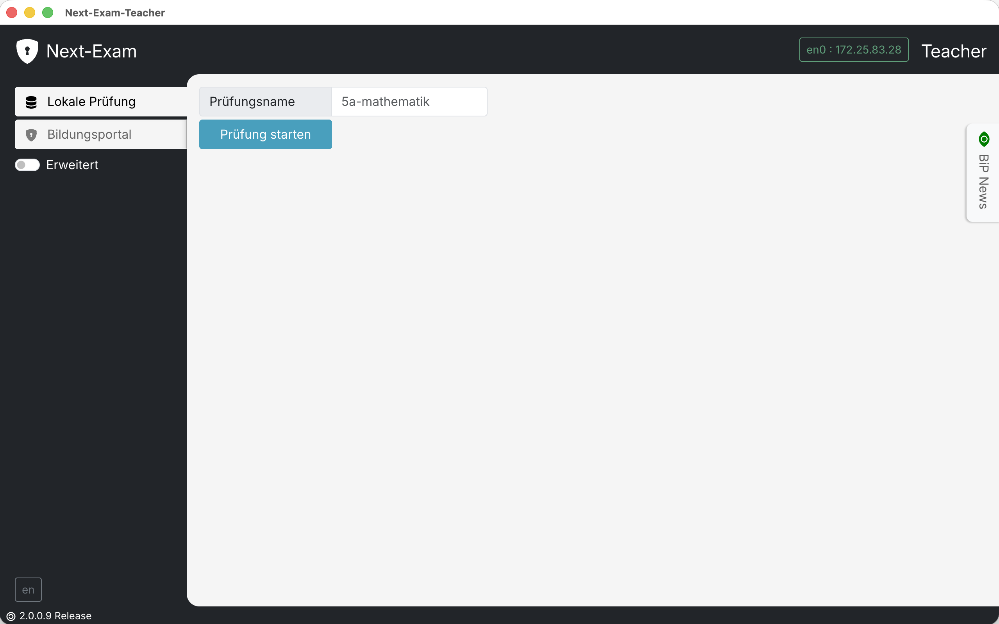
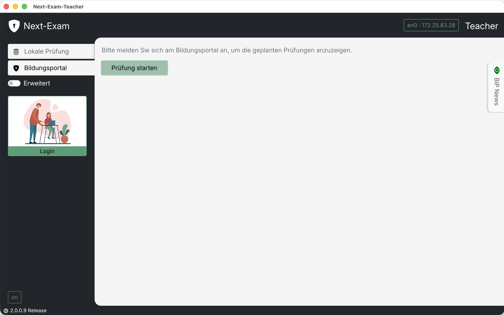
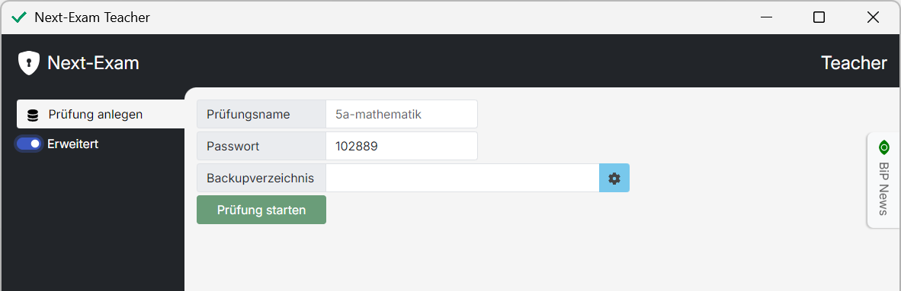
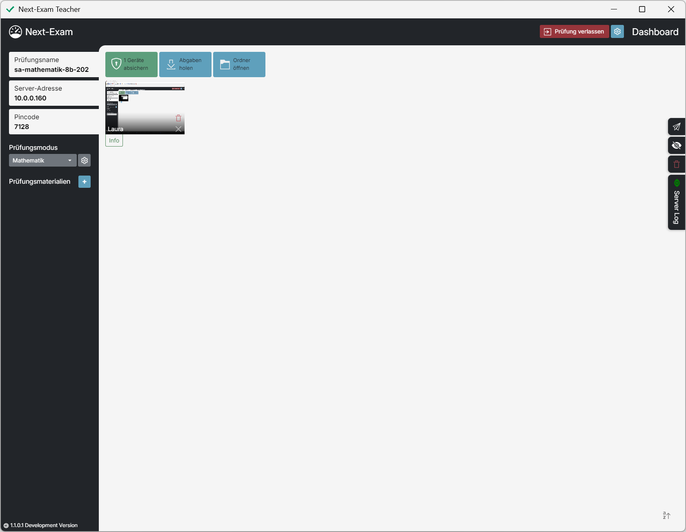
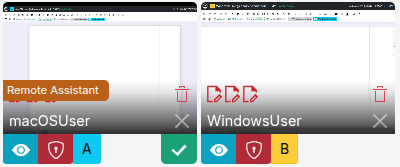
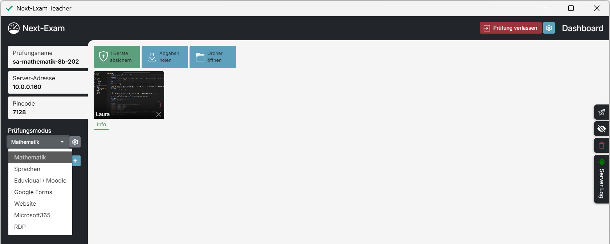
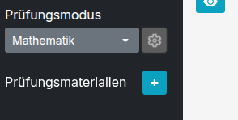
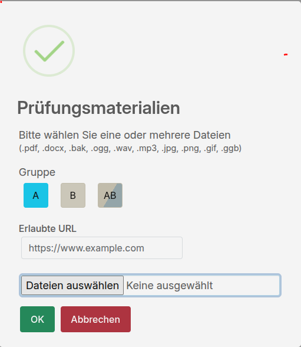
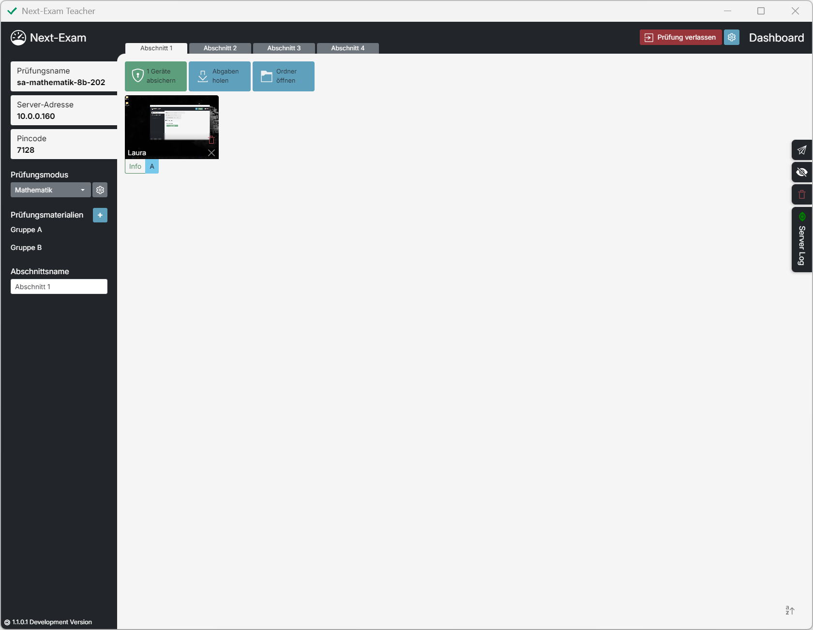
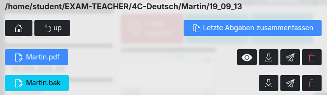

Teacher – Grundlegende Funktionen
Die Teacher-App legt Prüfungen an, verwaltet die verbundenen Schüler:innen-Geräte und überwacht die laufende Prüfung.
Prüfungsserver starten
Auf der Startseite stehen zwei Tabs zur Verfügung: Lokale Prüfung und Bildungsportal. Im Tab Lokale Prüfung wird die Prüfung direkt in der Teacher-App konfiguriert (siehe unten); im Tab Bildungsportal wird eine bereits im österreichischen Bildungsportal vorbereitete Prüfung geladen – siehe Bildungsportal.
{kind=link}

{kind=link}

Prüfungsname
Der Prüfungsname kann frei gewählt werden. Erlaubt sind die Zeichen a–z, A–Z, 0–9, - und _ (max. 20 Zeichen). Für jede Prüfung wird im Arbeitsverzeichnis EXAM-TEACHER ein eigener Prüfungsordner mit allen Sicherungen, Abgaben und der Prüfungskonfiguration angelegt.
Passwort festlegen (optional)
Über den Schalter Erweitert kann ein Passwort (mit Bestätigung) festgelegt werden. Schüler:innen können den abgesicherten Modus auch bei Verbindungsverlust nicht ohne dieses Passwort verlassen.
Standardkennwort
Wird kein eigenes Passwort festgelegt, verwendet Next-Exam das Standardkennwort next-exam. Für sensible Prüfungen sollte daher immer ein individuelles Passwort vergeben werden.
Backupverzeichnis festlegen (optional)
Im erweiterten Modus kann zusätzlich ein Backupverzeichnis gewählt werden (z. B. Netzwerkordner oder USB-Stick). Dort wird eine Kopie des Arbeitsverzeichnisses abgelegt.
{kind=link}

Netzwerkschnittstelle wählen
Besitzt der Rechner mehrere aktive Netzwerkschnittstellen (z. B. LAN und WLAN), fragt Next-Exam beim Start nach der bevorzugten Schnittstelle. Über diese Schnittstelle wird der Prüfungsserver im Netzwerk bekannt gemacht.
Prüfung fortsetzen
Unter Lokale Prüfungen werden alle bereits angelegten Prüfungen aufgelistet. Ein Klick auf den Prüfungsnamen setzt die Prüfung mit allen Einstellungen und Daten fort. Das x-Symbol löscht den lokalen Prüfungsordner. Prüfungen aus nicht kompatiblen Programmversionen werden entsprechend markiert.
Dashboard
Das Dashboard bietet eine Übersicht über alle verbundenen Geräte und stellt alle prüfungsrelevanten Informationen und Aktionen bereit.
{kind=link}

- Pincode: Der automatisch generierte vierstellige Pincode wird von den Schüler:innen zur Anmeldung benötigt. Über Pincode ändern kann er angepasst werden; Anmeldeinformationen anzeigen blendet Pincode und Server-Adresse groß ein.
- Server-Adresse: Wird die Prüfung im Netzwerk nicht automatisch gefunden, geben die Schüler:innen diese Adresse manuell ein.
- Status der Geräte: Jedes verbundene Gerät erscheint als Widget mit Namen, Screenshot und Statusanzeigen (verbunden/offline, abgesichert, Fokus verloren, Virtualisierung erkannt, Remote-Assistant-Warnung u. a.).
- Sitzplan: Die Widgets können per Drag & Drop angeordnet werden; alternativ sortiert Student Widgets alphabetisch sortieren automatisch.
- Server-Log: Über das Log-Symbol lässt sich das Server-Protokoll ein- und ausblenden.
Schüler:innen-Widget
{kind=link}

Über das Widget stehen pro Schüler:in folgende Funktionen zur Verfügung:
- Info / Details: Detailansicht mit Live-Screenshot und Einzelaktionen.
- Sicherung holen: Aktuellen Arbeitsstand (Backup und Log-Dateien) der Person anfordern.
- Datei senden: Einzelne Dateien gezielt an diese Person übertragen.
- Screenshot speichern: Aktuellen Screenshot im Ordner
screenshotsablegen. - Gerät absichern / freigeben: Abgesicherten Modus für dieses eine Gerät starten oder beenden.
- A / B: Gruppenzuweisung (sofern Gruppen aktiviert sind, siehe Erweiterte Funktionen).
- Verbindung trennen (Kick): Person vom Prüfungsserver entfernen. Liegt noch keine Abgabe (PDF) vor, warnt Next-Exam davor.
- Arbeitsordner bereinigen: Arbeitsordner auf dem Gerät der Person leeren.
Zusätzliche Symbole erscheinen bei Ereignissen wie eingegangener Abgabe, erkannter virtualisierter Arbeitsumgebung, belegtem LanguageTool-Port oder dem Versuch, den abgesicherten Modus zu verlassen.
Prüfungsmodus wählen
{kind=link}

Die Auswahl erfolgt über das Dropdown Prüfungsmodus:
- Mathematik – GeoGebra Suite/Classic (Details)
- Sprachen – Texteditor (Details)
- Active Sheets – interaktive PDF-Formulare (Details)
- Eduvidual / Moodle, Forms, Website, Microsoft365 – Online-Modi (Details)
- RDP – RD Web Client (Details)
- LocalVM – lokale virtuelle Maschine (Details)
Je nach Modus erscheinen in der Seitenleiste die modusspezifischen Einstellungen (z. B. Test-URL, Texteditor-Optionen, PDF-Auswahl). Über das Zahnrad-Symbol (oben rechts) sind die erweiterten Einstellungen der Prüfung erreichbar (Abschnitte, Gruppen, Zeitlimits, Sicherheitsfunktionen – siehe Erweiterte Funktionen).
Prüfungsmaterialien definieren
{kind=link}

Im Bereich Prüfungsmaterialien werden Dateien (PDFs, Bilder, Audiodateien, GeoGebra-Dateien u. a.) und URLs festgelegt, die während der Prüfung verfügbar sein sollen.
{kind=link}

- Materialien werden über das
+-Symbol hinzugefügt und über dasxwieder entfernt. - Sind Gruppen aktiviert, können Materialien getrennt für Gruppe A und B zugewiesen werden.
- Manche Modi verlangen ein Pflichtmaterial (z. B. Test-URL bei Eduvidual, PDF bei Active Sheets). Unvollständig konfigurierte Prüfungsabschnitte verhindern das Absichern der Geräte.
- Materialien werden direkt an die Clients übertragen; Änderungen sind auch während der Prüfung möglich (Schüler:innen laden sie über „Materialien aktualisieren“ nach).
Prüfung starten, Geräte absichern, Prüfung beenden
{kind=link}

- Geräte absichern (grün): Startet den abgesicherten Prüfungsmodus auf allen verbundenen Geräten. Die Schüler:innen-Geräte wechseln in den Kiosk-/Prüfungsmodus mit der gewählten Prüfungsumgebung.
- Geräte freigeben (rot): Beendet den abgesicherten Modus auf allen Geräten. Einzelne Geräte lassen sich über das Widget gezielt absichern oder freigeben.
- Bildschirme sperren / freigeben: Dunkelt die Bildschirme aller Schüler:innen ab, z. B. für Ansagen.
- Prüfung verlassen: Beendet den Prüfungsserver. Bestehende Verbindungen werden getrennt; abgesicherte Schüler:innen können offline weiterarbeiten. Hat eine noch verbundene Person keine Abgabe im Prüfungsordner, erscheint eine Warnung.
Abgaben verwalten
Abgabenübersicht
Die Schaltfläche Abgabenübersicht öffnet eine Tabelle aller eingegangenen Abgaben mit Schüler:in, Datei, Prüfungsabschnitt und Datum. So ist auf einen Blick ersichtlich, von wem bereits eine finale Abgabe vorliegt.
Sicherungen anfordern
- Sicherung holen fordert von allen Geräten den aktuellen Arbeitsstand an (Sicherungskopien und Log-Dateien).
- Über die Automatische Sicherung (Backup-Intervall in Minuten) geschieht dies regelmäßig ohne Zutun – siehe Erweiterte Funktionen.
- Letzte Abgaben zusammenfassen erzeugt eine Sammel-PDF der jeweils neuesten Abgaben aller Schüler:innen.
Prüfungsprotokoll (Event Log)
Die Schaltfläche Event Log öffnen zeigt das detaillierte Prüfungsprotokoll:
- Allgemeines Protokoll: Serverstart/-stopp, Prüfungsstart/-ende sowie die beim Prüfungsstart aktiven Einstellungen (Modus, Materialien, Gruppen, LanguageTool …).
- Schüler-Protokoll: Pro Person werden Anmeldungen, Re-Logins, Offline-Phasen, Fokus-Verluste, Virtualisierungs- und Netzwerk-App-Erkennungen, Abgaben und Druckanfragen aufgezeichnet.
- Das Protokoll kann als Druckansicht ausgegeben und damit archiviert werden.
Abgaben herunterladen / Arbeitsordner öffnen
{kind=link}

Die Schaltfläche Ordner öffnen startet den integrierten Dateimanager mit dem lokalen Prüfungsordner:
- Pro Schüler:in ein Ordner mit allen geholten Sicherungen (mit Zeitstempel).
- Finale Abgaben liegen im Ordner
ABGABE(nummeriert und mit Namen gekennzeichnet). - Dateien können in der Vorschau angesehen, extern geöffnet, gedruckt oder gezielt an einzelne Schüler:innen zurückgesendet werden (z. B. Editor-Sicherungen beim Gerätetausch).
- Verschlüsselte Abgaben (NXE1) lassen sich über PDF entschlüsseln öffnen; signierte Abgaben können validiert werden (siehe Erweiterte Funktionen).
- Über die Sidebar-Funktion Dateien senden können Dateien an alle Schüler:innen verteilt werden (pdf, jpg, mp3, htm, ggb, png, gif, wav, ogg). Gesendete Dateien stehen auch im abgesicherten Modus zur Verfügung.